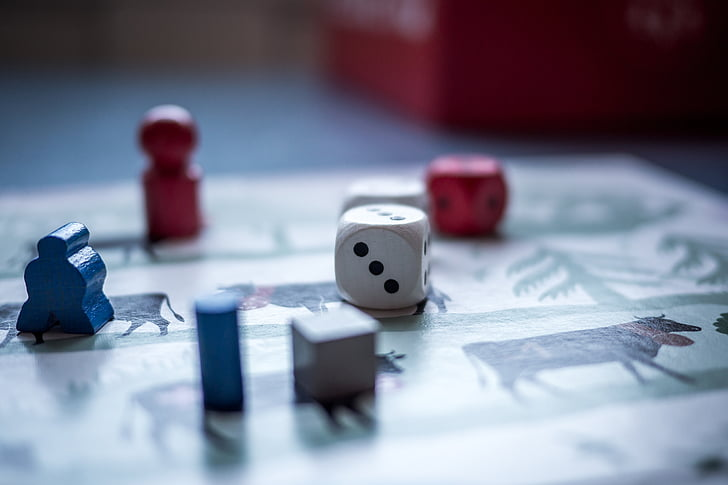

Background
I am a highly motivated and adaptable individual with a passion for continuous learning and self-improvement. I have studied 4 years of a Computer Science Engineering degree in Ecuador, which has motivated me to expand my knowledge to the field of web development.
I can speak both English and Spanish and I am enthusiastic about exploring new cultures and points of view.
Goals
My primary goal in pursuing a Techdegree in web development is to gain the technical skills necessary to become a competent web developer. This includes learning programming languages such as:
- HTML
- CSS
- JavaScript
- Ruby
- SQL
Throughout the program, I will work on a series of projects to create a portfolio of work. These projects will demonstrate my skills and can be presented to future employers as evidence of my abilities.
Hobbies
have a diverse set of hobbies that keep me engaged and entertained. First and foremost, I am an avid board game enthusiast. Whether it's a strategy-heavy, a cooperative board game that tests our teamwork, or a lively party game with friends, I relish the challenges and social interactions that board gaming provides.
You'll often find me with a good audiobook in my ears, especially when I'm traveling. Exploring new places and cultures is another passion of mine, and audiobooks provide the perfect companion for long journeys. They allow me to immerse myself in gripping stories or expand my knowledge through non-fiction works while on the go.